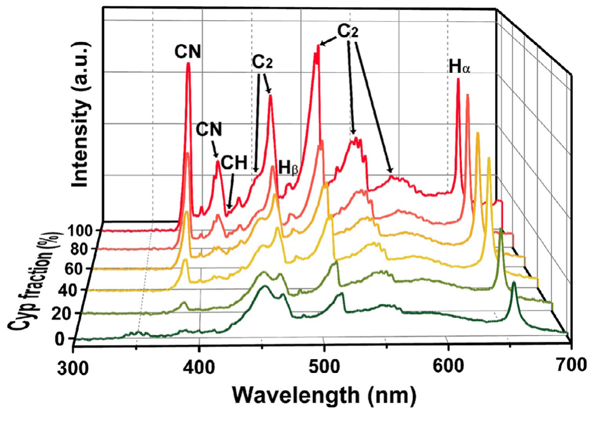
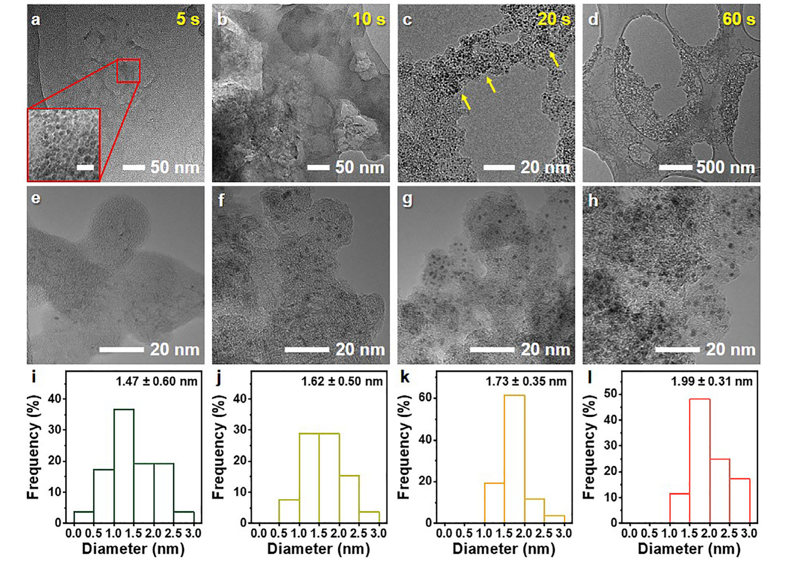
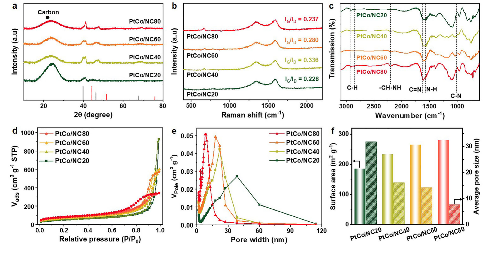
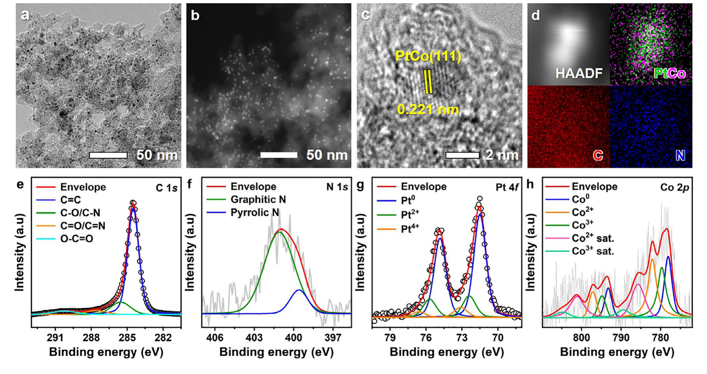
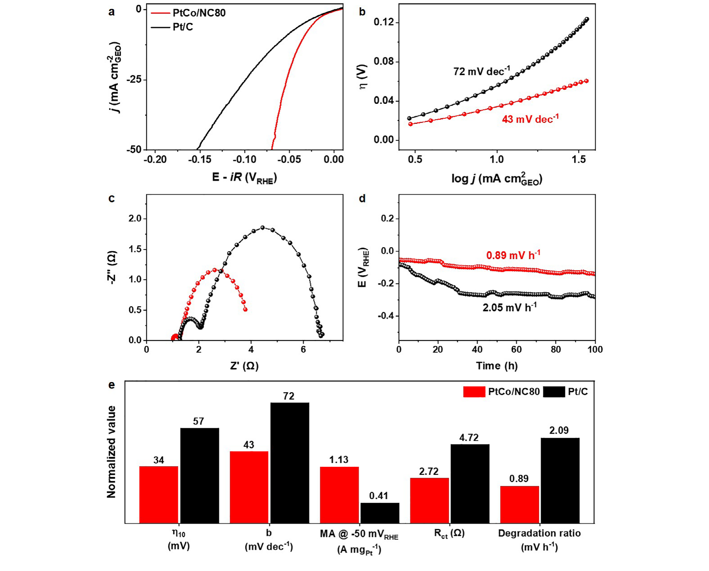
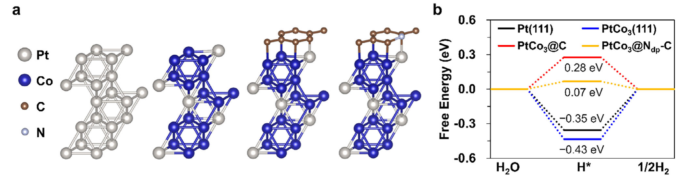

Ringkasan Eksekutif untuk Peneliti (4 Pilar Temuan Utama)
1. Hambatan Kinetika Reaksi Evolusi Hidrogen (HER) di Media Basa: Elektrolisis air berbasis alkali (Alkaline Water Electrolysis / AWE dan Anion Exchange Membrane Water Electrolysis / AEMWE) menjanjikan produksi hidrogen hijau berbiaya terjangkau. Namun, kinetika HER dalam larutan alkali terhambat oleh lambatnya tahap disosiasi air awal (langkah Volmer: H₂O + e⁻ + * → H* + OH⁻), yang menuntut overpotensial dua hingga tiga kali lipat lebih besar dibanding kondisi asam. Selain itu, katalis platina komersial (Pt/C) rentan mengalami aglomerasi partikel, pengelupasan, dan korosi pendukung karbon.
2. Paradigma Sintesis Plasma Cair Satu Wadah (60 Detik): Menggantikan rute reduksi kimia basah konvensional yang membutuhkan surfaktan beracun, reduktor berbahaya (NaBH₄, hidrazin), dan kalsinasi termal panjang berisiko sintering, penelitian ini menghadirkan Solution Plasma Process (SPP). Dengan lucutan plasma dingin berfrekuensi 30 kHz di antara elektroda kawat Pt dan Co dalam pelarut benzena-cyanopyrazine pada temperatur dan tekanan ruang, nanokristal bimetalik PtCo sub-2 nm dan cangkang karbon terdoping-N terbentuk serentak hanya dalam 60 detik.
3. Kinerja Elektrokatalitik Rekor dan Durabilitas Operasional: Pada elektrolit 1,0 M KOH, material PtCo/NC80 (rasio cyanopyrazine 80% v/v) membukukan overpotensial overpotential hanya 34 mV pada kerapatan arus 10 mA cm⁻², melampaui Pt/C komersial 20 wt% (57 mV), Pt/NC80 (53 mV), dan Co/NC80 (297 mV). Kemiringan Tafel sebesar 43 mV dec⁻¹ mengonfirmasi pergeseran tahap penentu laju ke arah mekanisme Volmer-Heyrovsky yang cepat. Uji ketahanan kronopotensiometri selama 100 jam menunjukkan degradasi minimal (0.89 mV h⁻¹), 2.35 kali lipat lebih tangguh dibanding Pt/C komersial.
4. Wawasan Mekanistik DFT Cangkang-Inti PtCo3@Ndp-C: Perhitungan Teori Fungsional Kerapatan (DFT) membuktikan bahwa keberadaan cangkang karbon terdoping-N (Ndp-C) menghasilkan energi pengikatan antar-muka kuat (-1.14 eV vs -0.98 eV pada cangkang karbon murni), mengunci nanokristal dari pelepasan logam. Modulasi elektronik bimetalik Pt-Co menurunkan pusat pita-d atom platina permukaan, menggeser energi bebas adsorpsi hidrogen (ΔG_H*) mendekati titik optimal Sabatier (ΔG_PDS = 0.07 eV vs 0.35 eV pada Pt(111)), sehingga mempercepat desorpsi H* secara drastis.
1. Urgensi Katalis HER Media Basa & Revolusi Sintesis Solution Plasma (SPP)
Transisi energi bersih global menempatkan hidrogen hijau sebagai pembawa energi nir-emisi paling strategis untuk dekarbonisasi sektor industri berat, transportasi jarak jauh, dan jaringan listrik terbarukan. Di antara beragam teknologi pemecahan air, elektrolisis air berbasis alkali (Alkaline Water Electrolysis / AWE) dan membran penukar anion generasi baru (Anion Exchange Membrane Water Electrolysis / AEMWE) mendapat perhatian luar biasa karena memungkinkan penggunaan komponen tumpukan (stack) berbiaya rendah dan bebas material titanium mahal. Kendati demikian, efisiensi konversi energi kedua sistem ini terhambat secara fundamental oleh kinetika Reaksi Evolusi Hidrogen (Hydrogen Evolution Reaction / HER) pada katoda.
Di lingkungan larutan asam, proton terhidrasi (H₃O⁺) tersedia melimpah, sehingga reaksi HER berlangsung spontan melalui transfer muatan cepat. Sebaliknya, pada medium alkali berair (seperti 1,0 M KOH), proton bebas praktis tidak hadir. Akibatnya, reaksi katoda terpaksa diawali dengan pemutusan ikatan H-OH yang sangat kuat pada molekul air netral melalui tahap disosiasi Volmer:
Energi aktivasi disosiasi air yang tinggi ini memperlambat laju reaksi keseluruhan hingga dua sampai tiga tingkat besaran (orders of magnitude) dibandingkan media asam. Meskipun elektrokatalis berbasis platina (Pt/C) komersial masih menjadi tolok ukur standar emas, biayanya yang sangat tinggi, kelangkaan geologisnya, serta kerentanannya terhadap degradasi mekanik-kimiawi membatasi implementasi komersial skala besar. Di bawah polarisasi katodik alkali yang keras, partikel nano platina murni mudah mengalami pelarutan permukaan, pematangan Ostwald (Ostwald ripening), serta peluruhan dari pendukung karbon karbon aktif yang rentan teroksidasi.
Upaya konvensional untuk merekayasa katalis bimetalik berstruktur paduan (alloy) sering kali terbentur pada kompleksitas metode preparasi kimia basah (wet-chemical reduction, sol-gel, atau hidrotermal). Rute-rute tradisional ini membutuhkan zat pereduksi berbahaya (seperti NaBH₄ atau hidrazin hidrat), surfaktan organik penstabil yang sulit dihilangkan, serta kalsinasi termal pasca-sintesis pada temperatur tinggi (>600 °C) yang tak terhindarkan memicu aglomerasi dan pertumbuhan ukuran partikel secara liar.
Untuk mengatasi jalan buntu metodologis tersebut, tim peneliti gabungan yang dipimpin oleh Jae Won Lee, Jin Young Kim, Sook Young Moon, Hyung Chul Ham, dan Yong-Ho Choa memperkenalkan pendekatan Solution Plasma Process (SPP). SPP merupakan teknik lucutan plasma dingin non-ekuilibrium yang dihasilkan secara langsung di dalam fase cair organik pada temperatur dan tekanan ruang. Melalui pemanfaatan tegangan denyut berfrekuensi tinggi (30 kHz) di antara sepasang elektroda kawat platina (Pt) dan kobalt (Co) dalam campuran pelarut benzena dan cyanopyrazine, lucutan plasma mampu mengerosi atom-atom logam dari ujung elektroda secara serentak (in-situ sputtering) sekaligus memecah molekul organik menjadi radikal karbon dan nitrogen reaktif. Hebatnya, seluruh proses nukleasi nanokristal PtCo bimetalik sub-2 nm dan penumbuhan matriks karbon berpori terdoping-N tuntas secara simultan hanya dalam waktu 60 detik tanpa memerlukan zat pereduksi eksternal maupun perlakuan panas lanjutan.
2. Spektroskopi Emisi Optik (OES) & Kinetika Nukleasi Ultra-Cepat 60 Detik
Guna memahami dinamika reaksi ekstrem di dalam zona mikro-plasma cair, para peneliti memasang sistem Spektroskopi Emisi Optik (Optical Emission Spectroscopy / OES) secara langsung menghadap titik lucutan. Karena plasma terbentuk di bawah tegangan puncak sekitar 2,5 kV dengan lebar denyut 1,0 μs, kerapatan elektron dan temperatur elektron lokal mencapai ribuan Kelvin, memicu eksitasi dan fragmentasi instan dari molekul pelarut cair.

Spektra OES pada Gambar 1 mengungkap pita emisi khas sistem Swan molekul C₂ (transisi elektronik d³Π_g → a³Π_u) pada panjang gelombang 473,7, 516,5, dan 563,5 nm yang berasal dari pirolisis radikal cincin benzena. Selain itu, puncak emisi radikal CH pada 431,4 nm (transisi A²Δ → X²Π) dan pita kuat sistem violet radikal CN pada 388,3 nm (transisi B²Σ⁺ → X²Σ⁺) membuktikan pemutusan ikatan C-N dan C≡N yang sangat efisien dari molekul prekursor cyanopyrazine (Cyp). Kehadiran radikal CN reaktif dalam fase uap plasma dingin ini menjadi kunci utama keberhasilan inkorporasi gugus nitrogen secara langsung ke dalam kerangka karbon yang sedang tumbuh.
Secara bersamaan, garis emisi atomik platina netral (Pt I pada 306,4 nm) dan kobalt netral (Co I pada 345,3 dan 350,2 nm) terdeteksi dengan intensitas tajam di dekat antarmuka elektroda. Hal ini membuktikan bahwa bombardir ion-ion cepat dalam plasma mengekstrak atom Pt dan Co dari permukaan elektroda kawat padat melalui mekanisme cathodic sputtering dan pelelehan mikro termal, melepaskan uap atomik logam ke dalam plasma yang segera terkondensasi secara bimetalik serentak di lingkungan cair.

Untuk mengungkap kinetika pembentukan material pada skala detik, sintesis dihentikan pada interval 5, 20, 40, dan 60 detik dan dianalisis menggunakan mikroskopi elektron transmisi (TEM) sebagaimana ditunjukkan pada Gambar 2. Pada durasi 5 detik pertama, lucutan plasma menghasilkan lembaran karbon amorf bergelombang dengan kluster logam yang baru mulai teratomisasi. Memasuki detik ke-20, kluster bimetalik PtCo sub-nanometer (diameter rata-rata ~1,2 nm) mulai tampak jelas menempel pada cacat struktural karbon.
Seiring bertambahnya waktu ke 40 dan 60 detik, terjadi pematangan terkendali di mana atom-atom logam terdifusi secara isotropik membentuk nanokristal bulat berukuran seragam yang terkunci rapat di dalam pori-pori matriks karbon. Variasi konsentrasi pelarut cyanopyrazine (20, 40, 60, dan 80% volume rasio terhadap benzena) menghasilkan rentang diameter rata-rata partikel yang sangat sempit: 1,47 nm untuk NC20, 1,72 nm untuk NC40, 1,85 nm untuk NC60, dan 1,99 ± 0,31 nm untuk NC80. Distribusi ukuran yang sangat ketat (sub-2 nm) ini membuktikan bahwa interaksi koordinasi antara atom nitrogen elektronegatif pada matriks karbon yang sedang terbentuk berfungsi sebagai perangkap termodinamika (coordination traps) yang menekan aglomerasi logam tanpa membutuhkan molekul surfaktan isolator eksternal.
3. Rekayasa Tekstur Mesopori, Doping Nitrogen, dan Karakteristik Fisik PtCo/NC
Struktur kristalografi dan kimia permukaan dari elektrokatalis hasil sintesis dianalisis secara komprehensif menggunakan difraksi sinar-X (XRD), spektroskopi Raman, Fourier-transform infrared (FT-IR), serta isoterm adsorpsi-desorpsi nitrogen (BET/BJH). Analisis ini esensial untuk memverifikasi apakah struktur karbon memiliki porositas yang memadai untuk transfer massa ion elektrolit dan apakah dopan nitrogen terikat secara kovalen dalam kisi sp².

Pola XRD pada Gambar 3a menunjukkan puncak difraksi landai di sekitar 2θ ≈ 25°, yang merupakan refleksi bidang (002) dari karbon grafitik terdisorder. Puncak difraksi logam terlihat melebar pada sudut 2θ ≈ 40,5°, memposisikan diri di antara bidang Pt(111) murni (39,7°) dan bidang Co(111) murni (44,2°). Pelebaran puncak ini merupakan konfirmasi langsung dari dua fenomena: pertama, dimensi kristalit nanokristal berada pada rezim ultra-kecil (<2 nm) sesuai persamaan Scherrer; kedua, atom Co yang beradius atomik lebih kecil (1,25 Å) telah berdifusi dan tersubstitusi secara homogen ke dalam kisi kristal Pt (1,39 Å), menyebabkan kontraksi kisi kristal pada struktur larutan padat fcc tanpa segregasi fasa logam terpisah.
Spektra Raman (Gambar 3b) menampilkan dua pita utama yang khas: pita-D pada ~1350 cm⁻¹ (terkait dengan getaran simetri A_1g akibat cacat struktural dan atom karbon hibridisasi sp³) serta pita-G pada ~1590 cm⁻¹ (berasal dari peregangan ikatan E_2g pada domain grafit sp² beraturan). Rasio intensitas I_D/I_G meningkat secara monoton dari 0,95 pada sampel PtCo/NC20 hingga mencapai 1,18 pada PtCo/NC80. Kenaikan rasio ini membuktikan bahwa inkorporasi konsentrasi cyanopyrazine yang lebih tinggi memicu pembentukan kerapatan cacat topologis (topological defects) dan tepi grafena yang jauh lebih melimpah, yang sangat menguntungkan sebagai situs penambat nanokristal dan situs transfer elektron.
Konfirmasi inkorporasi gugus fungsi nitrogen diperkuat oleh spektra FT-IR (Gambar 3c), yang memperlihatkan serapan karakteristik pada 1620 cm⁻¹ (peregangan ikatan C=N dan cincin aromatik C=C), 1380 cm⁻¹ (peregangan kovalen C-N), dan serapan di daerah 1120 cm⁻¹. Isoterm adsorpsi-desorpsi nitrogen (Gambar 3d) menampilkan kurva isoterm tipe IV dengan lingkar histeresis H3, yang merupakan tanda khas dari material berpori mesopori hierarkis. Luas permukaan spesifik BET meningkat dramatis dari 145,2 m² g⁻¹ pada NC20 menjadi 280,10 m² g⁻¹ pada NC80, dengan volume pori total 0,48 cm³ g⁻¹ dan distribusi diameter pori BJH terpusat pada 7,7 nm. Pori-pori berukuran mesopori 7,7 nm ini bertindak sebagai jalan tol mikrofluida yang memfasilitasi penetrasi cepat molekul air dan ion OH⁻ serta mempercepat pelepasan gelembung gas H₂ mikro dari permukaan elektroda selama reaksi berlangsung.
Molekul cyanopyrazine memiliki dua atom nitrogen heteroatom pada cincin aromatik dan satu gugus nitril (-C≡N) berpolaritas tinggi. Ketika dipaparkan pada lucutan plasma cair, radikal nitrogen bermassa jenis tinggi menstabilkan pemecahan cincin benzena dan membatasi pembentukan domain grafit berukuran makro yang tertutup. Hasilnya adalah struktur matriks karbon berpori terbuka yang kaya mesopori dengan luas permukaan spesifik hampir dua kali lipat lebih besar dibanding sistem karbon murni.
4. Karakterisasi Resolusi Tinggi HRTEM, STEM-EDS, dan Keadaan Valensi Logam XPS
Untuk mengonfirmasi struktur internal nanokristal dan lingkungan ikatan kimia pada antarmuka heterogen, sampel PtCo/NC80 dianalisis menggunakan mikroskopi elektron transmisi resolusi tinggi (HRTEM), pemindaian TEM sudut tinggi medan gelap (STEM-HAADF), spektroskopi sinar-X dispersi energi (EDS), serta spektroskopi fotoelektron sinar-X (XPS).

Citra HRTEM pada Gambar 4a mengungkap kisi kristal nanokristal PtCo yang sangat terdefinisi dengan jarak antar-bidang kisi (interplanar d-spacing) sebesar 0,218 nm. Nilai ini berada persis di antara jarak bidang (111) Pt murni (0,226 nm) dan bidang (111) Co murni (0,205 nm), memberikan bukti konklusif terjadinya kontraksi kisi akibat paduan larutan padat bimetalik PtCo. Menariknya, nanokristal bimetalik ini secara alami terselubungi oleh 2 hingga 3 lapisan tipis karbon terorientasi, membentuk arsitektur semi-cangkang (core-shell like encapsulation) yang melindungi inti logam dari pelarutan kimiawi selama elektrolisis.
Pemeriksaan STEM-HAADF dan pemetaan elemental EDS (Gambar 4b) mengonfirmasi bahwa sinyal platina (Pt) dan kobalt (Co) terko-lokalisasi secara seragam di setiap titik nanopartikel di seluruh bidang lembaran karbon yang kaya nitrogen (N). Tidak ditemukan partikel kobalt oksida bebas atau segregasi fasa logam terpisah, menegaskan efisiensi pencampuran kinetik plasma larutan.
Spektra XPS resolusi tinggi (Gambar 4c-e) memberikan wawasan mendalam mengenai struktur elektronik material. Dekonvolusi spektrum N 1s menghasilkan empat komponen utama:
- Nitrogen Piridinik (Pyridinic-N, 398,4 eV): Menyumbangkan satu pasangan elektron bebas untuk koordinasi dan adsorpsi dipol air.
- Nitrogen Pirolik (Pyrrolic-N, 400,1 eV): Berperan dalam meningkatkan hidrofilisitas dan polaritas kisi karbon.
- Nitrogen Grafitik/Kuarterner (Graphitic-N, 401,3 eV): Menyumbang sekitar 45% dari total kandungan nitrogen, menyuntikkan elektron ke pita konduksi π karbon sehingga meningkatkan konduktivitas listrik secara signifikan.
- Nitrogen Teroksidasi (Oxidized-N, 403,0 eV): Komponen minor pada tepi lembaran karbon.
Pada spektrum Pt 4f (Gambar 4d), sepasang puncak Pt 4f_7/2 (71,5 eV) dan Pt 4f_5/2 (74,8 eV) bergeser positif sebesar +0,4 eV dibandingkan energi ikat Pt logam standar (71,1 eV). Pergeseran positif ini menandakan adanya penipisan parsial kerapatan elektron pada atom Pt akibat transfer muatan elektronik ke atom Co tetangga dan nitrogen elektronegatif di sekitarnya. Modulasi keadaan valensi ini memodifikasi struktur pita-d (d-band center) Pt, yang nantinya terbukti krusial dalam memperlemah kekuatan adsorpsi perantara hidrogen H*. Sementara itu, spektrum Co 2p (Gambar 4e) memperlihatkan kontribusi Co logam (Co⁰) pada inti paduan serta spesies Co²⁺/Co³⁺ teroksidasi parsial pada permukaan yang berinteraksi dengan kerangka karbon-nitrogen.
| Katalis | Ukuran Partikel (nm) | Luas BET (m² g⁻¹) | Rasio N (at.%) | η_10 (mV) | Tafel (mV dec⁻¹) | R_ct (Ω) |
|---|---|---|---|---|---|---|
| PtCo/NC80 | 1.99 ± 0.31 | 280.10 | 8.42 | 34 | 43 | 2.72 |
| PtCo/NC60 | 1.85 ± 0.32 | 242.30 | 6.85 | 44 | 51 | 3.45 |
| PtCo/NC40 | 1.72 ± 0.30 | 198.50 | 5.12 | 61 | 63 | 4.18 |
| PtCo/NC20 | 1.47 ± 0.28 | 145.20 | 3.41 | 82 | 75 | 5.23 |
| Pt/NC80 (Kontrol Pt) | 2.15 ± 0.35 | 265.40 | 8.20 | 53 | 65 | 5.60 |
| Co/NC80 (Kontrol Co) | 3.40 ± 0.62 | 248.10 | 8.15 | 297 | 118 | 38.40 |
| Pt/C Komersial (20 wt%) | 3.10 ± 0.50 | 112.50 | — | 57 | 72 | 4.72 |
5. Kinerja Elektrokatalitik HER Alkali, Kinetika Tafel, dan Ketahanan 100 Jam
Aktivitas elektrokatalitik terhadap reaksi evolusi hidrogen dievaluasi menggunakan konfigurasi tiga-elektroda standar dengan elektroda cakram putar (Rotating Disk Electrode / RDE, 1600 rpm) dalam larutan 1,0 M KOH (pH ≈ 14) yang dijenuhi gas nitrogen murni untuk mengeliminasi gangguan oksigen terlarut. Seluruh potensial dikonversi terhadap skala Elektroda Hidrogen Reversibel (RHE) dan dikompensasi tahanan larutan secara otomatis (iR-compensated 95%).

Kurva polarisasi Linear Sweep Voltammetry (LSV) pada Gambar 5a memperlihatkan keunggulan mutlak dari elektrokatalis PtCo/NC80. Untuk mengalirkan kerapatan arus standar 10 mA cm⁻² (metrik kunci yang setara dengan efisiensi konversi solar-to-hydrogen 10%), PtCo/NC80 hanya membutuhkan overpotensial (η_10) sebesar 34 mV. Nilai ini luar biasa mengesankan, yakni 23 mV lebih rendah dibandingkan katalis tolok ukur industri Pt/C komersial 20 wt% (57 mV). Katalis kontrol berbasis monometalik seperti Pt/NC80 memerlukan overpotensial 53 mV, sedangkan Co/NC80 membutuhkan overpotensial hingga 297 mV, membuktikan bahwa integrasi bimetalik Pt dan Co menghasilkan efek sinergis yang sangat kuat.
Untuk membedah mekanisme transfer elektron, analisis kemiringan Tafel (Tafel slope, Gambar 5b) dilakukan pada wilayah kinetika aktivasi murni. Secara teoritis, reaksi HER di media basa berlangsung melalui salah satu dari dua kombinasi mekanisme: Volmer-Heyrovsky atau Volmer-Tafel:
PtCo/NC80 menunjukkan nilai kemiringan Tafel terkecil yaitu 43 mV dec⁻¹, jauh lebih curam dibanding Pt/C komersial (72 mV dec⁻¹), Pt/NC80 (65 mV dec⁻¹), maupun Co/NC80 (118 mV dec⁻¹). Nilai 43 mV dec⁻¹ yang sangat mendekati nilai teoritis 39–40 mV dec⁻¹ untuk tahap Heyrovsky membuktikan bahwa tahap penentu laju reaksi (Rate-Determining Step / RDS) tidak lagi dibatasi oleh pemutusan ikatan H-OH air yang lambat pada tahap Volmer, melainkan telah beralih ke desorpsi elektrokimiawi cepat dari perantara H* teradsorpsi.
Spektroskopi Impedansi Elektrokimia (EIS, Gambar 5c) yang diukur pada overpotensial reaksi menunjukkan diameter setengah lingkaran Nyquist yang sangat kecil untuk PtCo/NC80. Melalui pencocokan rangkaian ekuivalen elektrik, resistansi transfer muatan antarmuka (R_ct) dari PtCo/NC80 tercatat hanya 2,72 Ω, hampir separuh dari resistansi Pt/C komersial (4,72 Ω) dan jauh melampaui Co/NC80 (38,40 Ω). Nilai R_ct yang sangat rendah ini menegaskan konduktivitas elektrik super cepat yang difasilitasi oleh jaringan karbon grafitik terdoping nitrogen kuarterner.
Aspek paling krusial untuk aplikasi komersial adalah durabilitas jangka panjang (Gambar 5d). Pengujian kronopotensiometri kontinyu pada kerapatan arus katodik -10 mA cm⁻² dioperasikan selama 100 jam tanpa henti. PtCo/NC80 menunjukkan stabilitas luar biasa dengan laju degradasi potensial hanya 0,89 mV h⁻¹ (total kenaikan overpotensial hanya ~89 mV setelah 100 jam). Sebagai pembanding, katalis Pt/C komersial mengalami laju peluruhan 2,05 mV h⁻¹ (2,35 kali lipat lebih cepat aus), di mana kinerjanya menurun drastis setelah 40 jam akibat pelepasan nanopartikel Pt dan degradasi karbon pendukung. Di samping itu, uji siklus percepatan (5.000 siklus voltametri siklik berulang) menunjukkan kurva polarisasi PtCo/NC80 hampir berhimpit sempurna dengan kurva awal (pergeseran potensial kurang dari 4 mV pada 10 mA cm⁻²).
6. Mekanisme Termodinamika DFT Core-Shell PtCo3@Ndp-C & Validasi Defek Karbon
Untuk membongkar akar penyebab molekular di balik lonjakan aktivitas elektrokatalitik dan ketahanan super dari katalis ini, perhitungan Teori Fungsional Kerapatan (Density Functional Theory / DFT) dilakukan pada berbagai konfigurasi model lempeng permukaan (slab models). Empat model permukaan disimulasikan: Pt(111) murni, permukaan paduan bimetalik PtCo3(111), lempeng paduan dengan cangkang karbon murni (PtCo3@C), serta lempeng paduan dengan cangkang karbon terdoping-N (PtCo3@Ndp-C) yang memodelkan doping nitrogen piridinik dan grafitik.

Kestabilan mekanik-termal dari arsitektur inti-cangkang dievaluasi pertama kali melalui energi pengikatan antar-muka (interfacial binding energy, E_bind). Perhitungan DFT membuktikan bahwa cangkang karbon terdoping nitrogen terikat sangat kokoh pada permukaan inti paduan bimetalik PtCo3(111) dengan energi pengikatan sebesar -1,14 eV. Nilai ini jauh lebih eksotermik dibandingkan energi pengikatan cangkang karbon murni (-0,98 eV). Afinitas antarmuka yang tinggi ini berasal dari hibridisasi orbital antara elektron orbital d dari kobalt/platina dengan orbital p terdelokalisasi dari atom nitrogen elektronegatif. Ikatan antarmuka yang sangat kuat inilah yang bertindak sebagai jangkar mekanis, mencegah peluruhan, pelarutan asam-basa, atau pengelupasan nanokristal PtCo dari matriks karbon selama polarisasi beratus-ratus jam.
Selanjutnya, profil termodinamika adsorpsi hidrogen (ΔG_H*) dihitung di sepanjang koordinat reaksi HER. Menurut prinsip Sabatier, katalis HER yang ideal harus memiliki energi bebas adsorpsi hidrogen netral mendekati nol (ΔG_H* ≈ 0 eV). Jika pengikatan H* terlalu kuat (ΔG_H* << 0), desorpsi hidrogen membentuk molekul gas H₂ menjadi sangat sulit; sebaliknya, jika pengikatan H* terlalu lemah (ΔG_H* >> 0), adsorpsi awal hidrogen tidak dapat terjadi.
Pada permukaan Pt(111) standar, adsorpsi perantara hidrogen bersifat eksotermik kuat dengan nilai ΔG_H* = -0,35 eV, menjadikan desorpsi hidrogen sebagai tahap penentu potensial (Potential-Determining Step / PDS) dengan hambatan bebas ΔG_PDS sebesar 0,35 eV. Pada permukaan paduan terbuka PtCo3(111), pengikatan hidrogen menjadi semakin kuat secara negatif (ΔG_H* = -0,43 eV; ΔG_PDS = 0,43 eV). Kondisi pengikatan yang terlampau kuat ini justru memperlambat laju desorpsi di media basa.
Sebaliknya, pada konfigurasi heterostruktur inti-cangkang PtCo3@Ndp-C, polarisasi muatan lokal dan efek penarikan elektron oleh heteroatom nitrogen pada cangkang karbon memodulasi pusat pita-d atom platina di bawahnya. Fenomena ini melemahkan kekuatan interaksi orbital Pt-H secara tepat, menggeser nilai ΔG_H* menjadi hanya -0,07 eV. Dengan nilai ΔG_PDS yang sangat kecil yakni 0,07 eV, permukaan PtCo3@Ndp-C berada tepat di puncak kurva gunung berapi (volcano plot) Sabatier. Hasil komputasi ini menjelaskan secara elegan mengapa PtCo/NC80 menunjukkan kinetika Tafel yang sangat cepat dan overpotensial rekor 34 mV dalam eksperimen nyata.
Secara keseluruhan, riset ini membuktikan bahwa penggabungan inovatif antara sintesis plasma larutan ultra-cepat 60 detik bebas bahan kimia berbahaya dengan rekayasa elektronik antarmuka bimetalik-karbon terdoping menghasilkan katalis HER masa depan yang tidak hanya mengungguli platina komersial secara dramatis dalam aktivitas, tetapi juga menjawab tantangan daya tahan pada elektrolisis air alkali dan AEMWE skala industri.
Lee, J. W., Kim, J., Lee, E., Lee, C. S., Kim, S., Son, H. J., Choa, Y.-H., Ham, H. C., Moon, S. Y., & Kim, J. Y. (2026). Solution Plasma-Assisted Synthesis of Uniform Bimetallic PtCo Nanocrystals on N-Doped Carbon for Efficient Hydrogen Evolution Reaction. ChemCatChem, 18, e71035. https://doi.org/10.1002/cctc.71035